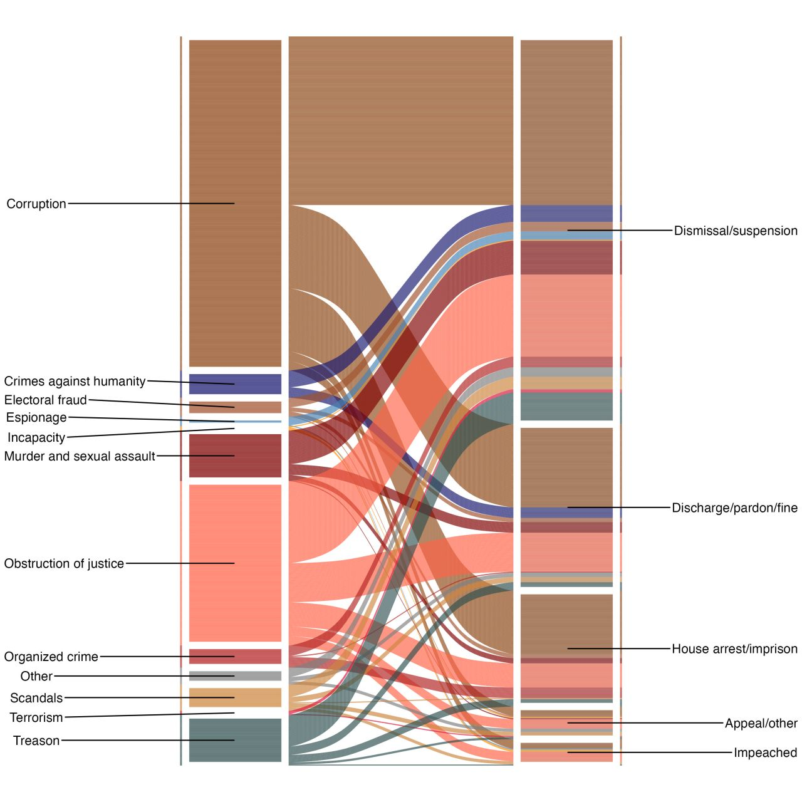

NOV 2024 · TALK
How do polarization trends at home diffuse abroad? How do autocrats use identity politics to divide and politically control the opposition and key social groups? How do these narratives affect sentiments towards marginalized communities? These questions connect the work throughout this portfolio.
Why do states target some civilians with collective punishment while coopting others with material goods during an ethnic civil war? This article examines how the Turkish government calibrated its repression and cooptation policies towards the Kurdish population during the counterinsurgency of the 1990s. In contrast to the situational conflict dynamics emphasized by the civil war literature, we explain the distribution of cooptation and repression with the state's identity policy: government policies were more punitive in areas that displayed strong Kurdish linguistic/political identity, or high tribal concentration, while they were more cooptative where the government had fostered a Sunni-Muslim Kurdish identity. The study is based on a novel dataset that includes information about displacement, tribal concentration, and violent events from archival sources.
We will conduct list and conjoint experiments through online surveys with active armed group members in Myanmar and the Philippines to better understand rebel retention. We also hope to establish some priors for future experimental research with active rebel group members. To what extent do they strategically misreport? Are they less attentive compared to the general population? Do they differ in terms of their values/attitudes, including trust in institutions, life satisfaction, and attitudes toward democracy?
On brain drain and diaspora politics.
Why are cemeteries politicized and polarized?
How does polarization at home shape social network formation and political tolerance among immigrants? The existing scholarship suggests that networks with co-nationals in the country of destination can potentially provide a ‘haven’ for newcomers and facilitate their search for jobs, accommodation, and social connections. However, the impact of polarization in the home country on these everyday interactions between immigrants is understudied. We conducted two survey experiments in Turkey using a novel visual treatment of fake Facebook profiles, and replicated the designs in Canada. Our results indicate that home country polarization between regime supporters and opponents travels abroad. Under high polarization in the home country, anti-government immigrants are significantly less likely to help and socially engage with government-supporting co-nationals and tolerate political activities in the host country. However, despite high political polarization at home between anti-government groups, this divisiveness disappears abroad, as they are as likely to support, politically tolerate, and socially engage with each other. The findings offer insight into the mechanisms through which polarization at home can diffuse abroad and how contextual factors can mitigate affective polarization.
How did COVID-19 related movement restrictions impact sentiment toward refugees? Existing theories offer conflicting answers. On the one hand, contact theories suggest that movement restrictions might reduce casual interactions with refugees, leading to less negative sentiments. On the other hand, integrated threat theories suggest refugees may be perceived as a security threat and blamed for these movement restrictions in the first place. To gauge the effect of movement restrictions, we investigate the effect of physical isolation on sentiments toward refugees in Turkey by using a novel dataset. We use Google Mobility Reports’ measurements of movement and our measures of sentiments toward refugees using refugee-related tweets from Turkey. Statistical analysis shows that xenophobic sentiment generally decreased during the pandemic. Our study shows that different types of reduced mobility correlate with increased sympathy toward refugees: the more people stay at home, the more positive sentiments toward refugees they exhibit on Twitter. We conclude by proposing two possible causal mechanisms for these findings. The findings suggest that the absence of casual contact with refugees may yield less negative sentiment, and/or that a rally around the flag mechanism yields unprecedented levels of social solidarity in response to the pandemic.
Policy options on the Syrian refugee crisis.
For the first time in recent history, three great powers are run by autocratic regimes, with implications for the global order.
Reporting on daily life under occupation.
The #Islamabad talks seem quite unique to me. The US almost always serves as the mediator in the conflicts that I know and study, brokering deals at Camp David, etc. I can't recall many cases where the US was the party needing a mediator.
Read on Bluesky →For the first time since the 1930s, three nuclear superpowers are all governed by personalist leaders, who concentrate power, and operate in echo chambers. On @foreignaffairs.com, @seva.bsky.social and I discuss how personalism is reshaping the world order. www.foreignaffairs.com/united-state...
Read on Bluesky →
𝗪𝗵𝘆 𝗱𝗼 𝗰𝗼𝘂𝗻𝘁𝗿𝗶𝗲𝘀 𝗽𝗿𝗼𝘀𝗲𝗰𝘂𝘁𝗲 𝘁𝗵𝗲𝗶𝗿 𝗹𝗲𝗮𝗱𝗲𝗿𝘀? In our new dataset, we track these prosecutions. It's more common than you might think. Check out our Foreign Policy op-ed for the main findings. ♟️ Between 1989 and 2021, more than 75% of democratic and hybrid regimes initiated at least one prosecution against a former leader. Latin America stands out significantly in this trend.
Read on LinkedIn →